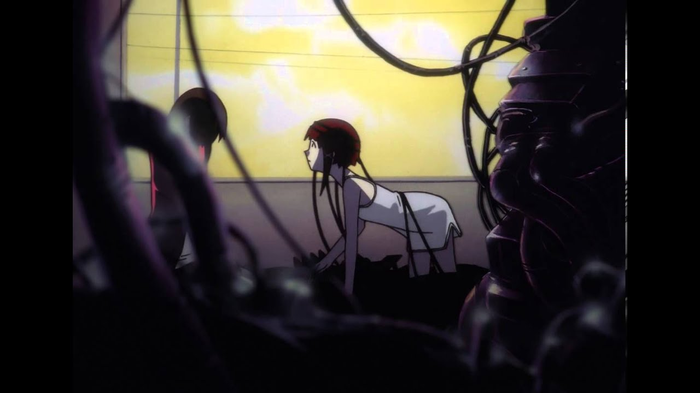

Present Day, Present Time!
Mergulhe na Wired e encontre todas suas maravilhas
Explorando a Wired
A Wired é apresentada como um espaço onde a consciência coletiva e individual se fundem, e os limites entre os pensamentos das pessoas e a tecnologia se desvanecem. A série aborda questões filosóficas sobre a natureza da existência, da comunicação e do que significa ser humano em um mundo cada vez mais digitalizado.
Estilo único
Serial Experiments Lain é conhecido por seu estilo visual distinto e narrativa intrigante. A atmosfera da série é profundamente surreal, mesclando elementos psicológicos e de ficção científica para criar uma experiência única. Os visuais minimalistas e o design singular dos personagens contribuem para a sensação de estranheza, enquanto a paleta de cores vibrantes destaca a diferença entre o mundo real e a Wired.
A trilha sonora, composta por Reichi Nakaido, desempenha um papel crucial na criação da atmosfera, variando entre peças etéreas e eletrônicas. A narrativa não linear e fragmentada desafia as expectativas convencionais, exigindo que os espectadores se envolvam ativamente na trama para entender completamente os eventos. Serial Experiments Lain mergulha nas profundezas de temas filosóficos e tecnológicos, explorando questões como a natureza da realidade e a interconexão entre a humanidade e a tecnologia.
Onde assistir?
Atualmente, a disponibilidade de Serial Experiments Lain pode variar dependendo da região e das plataformas de streaming. No entanto, você pode encontrar a série em serviços de streaming de anime populares, como: Crunchyroll: Serial Experiments Lain está disponível para transmissão no Crunchyroll em várias regiões. Funimation: Esta plataforma também pode oferecer Serial Experiments Lain para transmissão em determinadas regiões. Amazon Prime Video: Em algumas regiões, a série pode estar disponível para compra ou aluguel no Amazon Prime Video. Além dessas opções de streaming, também é possível encontrar cópias em DVD e Blu-ray da série para compra em lojas online e físicas. Certifique-se de verificar a disponibilidade e as opções de transmissão em sua região específica. fur, and occasionally doing the cha-cha-slide into the water.
Conheça os personagens principais
Lain Iwakura: A protagonista da série, uma adolescente introvertida que inicialmente não está muito conectada com a tecnologia. Sua vida muda drasticamente quando ela começa a explorar a Wired e se envolve em eventos complexos relacionados à realidade virtual e à natureza da existência. Alice Mizuki: Uma colega de classe de Lain e sua amiga próxima. Alice é mais extrovertida e popular, mas também se torna envolvida nos acontecimentos misteriosos relacionados à Wired. Reika Yamamoto: Outra colega de classe de Lain, que também se torna uma personagem importante à medida que a história se desenrola. Mika Iwakura: A irmã mais nova de Lain. Sua relação com Lain é explorada ao longo da série, especialmente à medida que os eventos na Wired começam a afetar a vida real. Masami Eiri: Um personagem central na trama, Eiri é um cientista de computação cujas ações desempenham um papel significativo nos eventos que ocorrem na Wired.
Curiosidades sobre a série
*Influência de William Gibson: O criador da série, Chiaki J. Konaka, foi fortemente influenciado por obras de ficção científica cyberpunk, especialmente pelos escritos de William Gibson. Essa influência é evidente na exploração dos temas de realidade virtual, consciência e tecnologia.
*Mensagens Subliminares: Serial Experiments Lain incorpora várias mensagens subliminares e simbolismos, incentivando os espectadores a examinarem cuidadosamente cada cena em busca de significados mais profundos
Para mais informações visite: Serial Experiments Lain Wiki